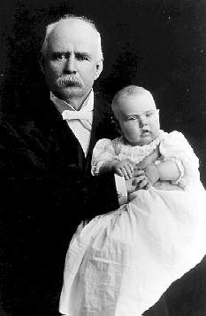
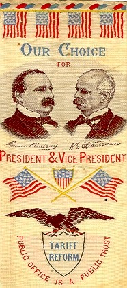
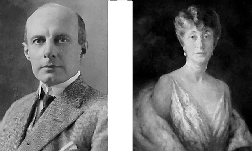
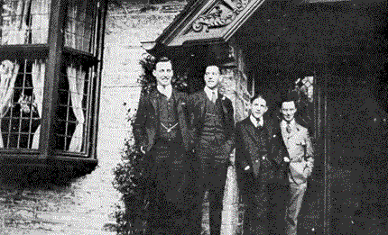
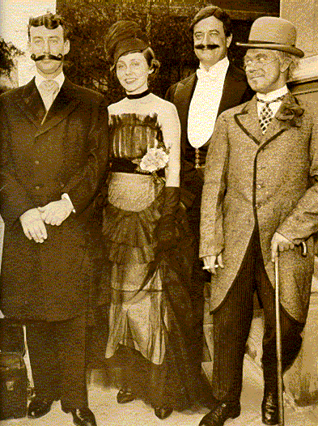
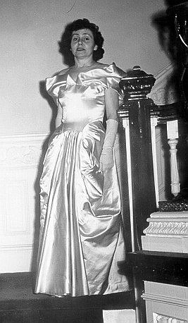
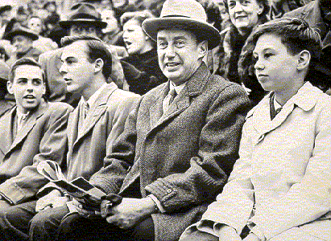

|  | Adlai Stevenson's paternal grandfather and namesake, Adlai Ewing Stevenson
I (holding his grandson and namesake, at left), served as a
congressman and vice president
under Grover Cleveland. Stevenson's wife once commented that the family "must have
Chinese blood in them, they all worship their ancestors so." |
 |
|  | Stevenson's father and mother, Lewis Green and Helen Davis Stevenson. Lewis Green Stevenson never held an elected office, but served as Secretary of State of Illinois and was considered a strong contender for the Democratic vice-presidential nomination in 1928. From his deathbed, Stevenson's father reportedly admonished his son, "politics is a hazardous life, full of ingratitudes." |
|  | Young Adlai E. Stevenson followed the family into politics and journalism. While at Choate, he served as business manager of The News, and was elected editor-in-chief for his senior year. At Princeton University, Stevenson (far left) was chosen managing editor of The Daily Princetonian. When an ownership dispute left the ownership of The Daily Pantagraph uncertain, Stevenson left Harvard Law School to work for the family paper. He served as a member of the board of directors for The Pantagraph most of his life. |
| Stevenson and wife, Ellen Borden Stevenson, hosted costume balls in
Chicago during the early years of their marriage. Pictured here are
Adlai, Ellen,
Lawrence Williams and Harry Knott. |
 |
|  | Adlai Stevenson married Ellen Borden in 1928. While she attended the inaugural ceremonies (left), she never resided at the Governor's Mansion. In September 1949, Governor Stevenson announced that he and Ellen were separating, and that he would not contest a divorce. Stevenson added that they retained the "highest mutual regard" for each other. |
| Stevenson and his three sons (l. to r.), Borden, Adlai III, and John Fell, in Cambridge at a Princeton-Harvard football game. All three boys attended Harvard instead of their father's alma mater, Princeton. |  |
Go to the next section of photographs.
Return to the Mudd Library home page.
© 2000 Princeton University Library